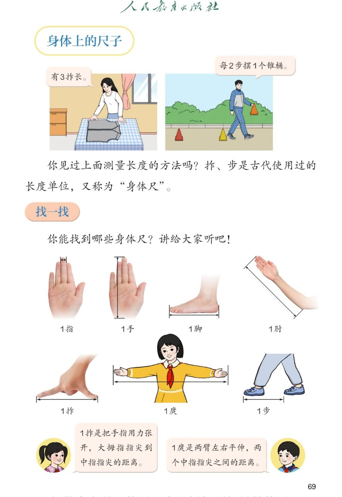

🔊 综合与实践 · 身体上的尺子 · 课本第 69 页 · 找一找
人教版《数学》二年级上册 · 有声图文带读 · 先想后看解析 · 七种身体尺 · 1拃与1庹
题数
6
认知
2
强化
3
拓展
1
本页重点
7 种身体尺：指手脚肘拃庹步 · 1拃与1庹的定义
🎧 分两步学：
① 解析教材图片
——纯声音读图，读到哪一块哪一块闪动提示；关键处先倒计时让你思考，再在图片下方给出解析并朗读。
② 分层提问练习
——六道分层题（认知 / 强化 / 拓展），先思考再展开解析、朗读参考答案；这一步不再回到图片。
也可以随时点任意一句话、图上任意一块单独听；点课本文字卡还会展开答案。
教材图片（点块听读，读到哪块哪块闪）

📖 人教版《数学》二年级上册 · 课本第 69 页 · 图片仅供个人学习，版权归人民教育出版社所有
🤔 想一想（点我可跳过）
课本的文字（点句子：听读 + 看答案）
七种身体尺
指 · 手 · 脚 · 肘 · 拃 · 庹 · 步
看答案 ▾
第一排 4 种：
1 指
（一根手指的宽）、
1 手
（手掌的长）、
1 脚
（脚的长）、
1 肘
（肘到指尖的长）；
第二排 3 种：
1 拃
、
1 庹
、
1 步
；
从短到长大致是：指 → 手 → 拃 → 脚 → 肘 → 步 → 庹。
古代单位
拃、步是古代的长度单位
看答案 ▾
古人量布用
拃
，一拃一拃数出几拃长；
走路、量路用
步
，一步一步数出几步远；
因为它们都
长在身体上
，所以又叫"身体尺"。
1 拃
1 拃是多长？
看答案 ▾
把手指
用力张开
，
大拇指指尖到中指指尖
的距离就是 1 拃；
注意：每一拃都要张得
一样大
，不然量出的数就不准。
1 庹
1 庹是多长？
看答案 ▾
两臂
左右平伸
，
两个中指指尖之间
的距离就是 1 庹；
小秘密：
庹长和身高差不多
，下一页就能验证；
庹最长，适合量长东西，比如教室、黑板、树干。
分层提问练习（先想后看解析）
🖐️
认知
课本介绍了哪几种身体尺？
看解析
🤔 想一想
解析：
七种：
1指、1手、1脚、1肘、1拃、1庹、1步
；
它们都长在身体上，是
天然的尺子
。
✋
认知
1 拃是多长？用拃能量什么？
看解析
🤔 想一想
解析：
手指用力张开，
拇指尖到中指尖
的距离；
拃比较短，适合量
课桌、数学书
这些小物体。
🙆
强化
1 庹怎么量？说说量法。
看解析
🤔 想一想
解析：
身体站直，两臂
左右水平伸直
；
从
左中指尖到右中指尖
的长度就是 1 庹；
💡 最好两人合作，自己一个人不好量
🤔
强化
量教室的长和铅笔的长，各选哪种身体尺合适？
看解析
🤔 想一想
解析：
教室长，用
步
走一走、数一数最方便；
铅笔短，用
拃
比一比就够了；
选身体尺的原则：物体
长用大的身体尺，短用小的身体尺
。
📏
强化
课本上图里的"3拃长""每2步摆1个锥桶"是什么意思？
看解析
🤔 想一想
解析：
妈妈量衣服：
有 3 拃长
，就是 3 个拃那么长；
老师
每走 2 步摆 1 个锥桶
，用步数控制距离。
🌈
拓展
身体尺这么方便，为什么还要发明统一的尺子？
看解析
🤔 想一想
解析：
身体尺
随身带、随时用
，很方便；
但每个人的一拃、一步
不一样长
，交流结果就说不清；
🌈 所以要统一的长度单位：厘米和米
① 解析教材图片
② 分层提问练习
⏹ 停止
纯声音 + 高亮跟随 · 想好才出解析
← 返回导航